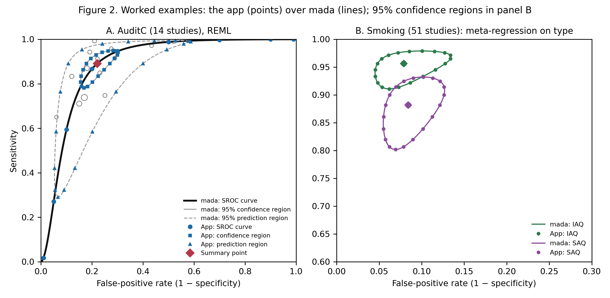
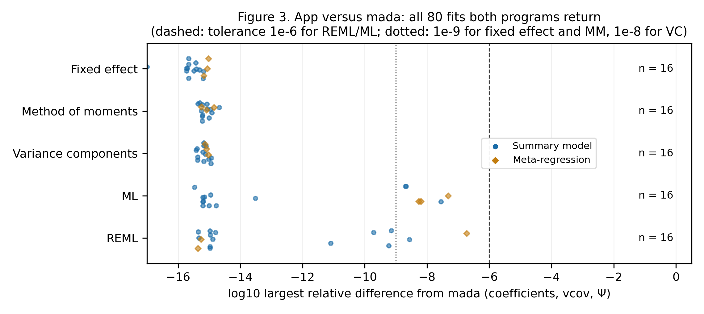
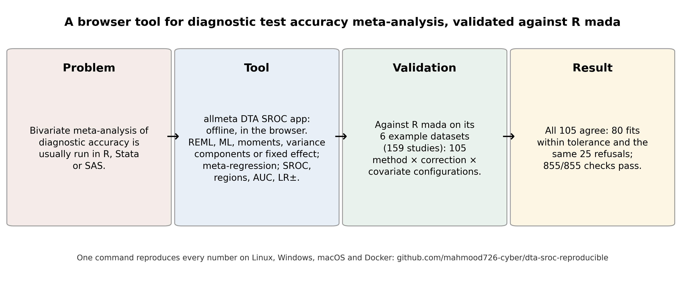

All runs · Repository · Live app
DTA SROC app: validation of the bivariate model against mada: latest verified full run
Run 38795238473 on commit 59203eb, published 2026-10-15 19:39 UTC. Full validation: every number in the paper.
| Platform | Result |
|---|---|
| Docker (canonical) | 53/53 numbers reproduced |
| Linux | 53/53 numbers reproduced |
| Windows | 53/53 numbers reproduced |
| macOS | 53/53 numbers reproduced |
| Cross-platform comparison (corpus and engine output bit-identical on the strict platforms) | success |
Every checked number (canonical run: full-docker)
| Quantity | Expected | Reproduced | Result |
|---|---|---|---|
| datasets | 6 | 6 | PASS |
| studies_total | 159 | 159 | PASS |
| zero_cell_studies | 18 | 18 | PASS |
| datasets_with_zero_cells | 5 | 5 | PASS |
| configurations | 105 | 105 | PASS |
| mada_fitted | 80 | 80 | PASS |
| mada_refused | 25 | 25 | PASS |
| refusals_matched | 25 | 25 | PASS |
| app_refused_mada_fitted | 0 | 0 | PASS |
| app_fitted_mada_refused | 0 | 0 | PASS |
| within_tolerance | 105 | 105 | PASS |
| all_within_tolerance | 1 | 1 | PASS |
| meta_regression_configurations | 15 | 15 | PASS |
| checks_total | 855 | 855 | PASS |
| checks_passed | 855 | 855 | PASS |
| fits_reml_ml | 32 | 32 | PASS |
| fits_fixed_mm | 32 | 32 | PASS |
| fits_vc | 16 | 16 | PASS |
| reml_ml_below_1e-6 | 1 | 1 | PASS |
| fixed_mm_vc_below_1e-12 | 1 | 1 | PASS |
| loglik_below_1e-9 | 1 | 1 | PASS |
| derived_below_1e-6 | 1 | 1 | PASS |
| moses_cases | 18 | 18 | PASS |
| moses_fitted | 13 | 13 | PASS |
| moses_agree | 18 | 18 | PASS |
| mada_not_converged | 0 | 0 | PASS |
| ex_k | 14 | 14 | PASS |
| ex_zero | 2 | 2 | PASS |
| ex_sens | 0.891 | 0.89088 | PASS |
| ex_sens_lo | 0.808 | 0.80808 | PASS |
| ex_sens_hi | 0.941 | 0.94058 | PASS |
| ex_spec | 0.78 | 0.77966 | PASS |
| ex_spec_lo | 0.715 | 0.71545 | PASS |
| ex_spec_hi | 0.833 | 0.83277 | PASS |
| ex_auc | 0.887 | 0.88668 | PASS |
| ex_pauc | 0.861 | 0.86119 | PASS |
| ex_rho | 0.85 | 0.8543 | PASS |
| ex_mada_sens | 0.891 | 0.89088 | PASS |
| ex_mada_spec | 0.78 | 0.77966 | PASS |
| ex_mada_auc | 0.887 | 0.88668 | PASS |
| ex_lrpos | 4.04 | 4.0432 | PASS |
| ex_lrneg | 0.14 | 0.14 | PASS |
| ex_ml_tau2_sens | 1.22 | 1.2238 | PASS |
| ex_reml_tau2_sens | 1.38 | 1.3796 | PASS |
| mr_k | 51 | 51 | PASS |
| mr_sens_saq | -1.07 | -1.073 | PASS |
| mr_sens_saq_se | 0.4 | 0.3982 | PASS |
| mr_sens_saq_p | 0.007 | 0.00705 | PASS |
| mr_fpr_saq | 0.07 | 0.0685 | PASS |
| mr_fpr_saq_p | 0.82 | 0.8236 | PASS |
| mr_mada_sens_saq | -1.07 | -1.073 | PASS |
| mr_sens_iaq | 0.96 | 0.9562 | PASS |
| mr_sens_saq_prob | 0.88 | 0.8818 | PASS |
Also as reproduction_report.md and stats.json; every run's full outputs are artefacts of the run.
Figures from this run


